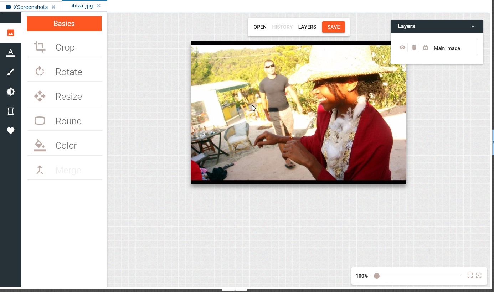

Summary
1. Basics
2. Classics
3. XBlox
4. Visual Editor
5. Drivers
1. Basics
Most in Control Freak is based on files. The file manager is being developed since 3 years and combines the best known from native file - managers:

As in any operating system, items can be opened in different editors:
Important
Users can use their preferred editors. Any change of files will cause updates in the IDE and the control-application.
2. Classic Interface
All user actions can be performed through:
- Ribbons
- Context - Menu
- Local Toolbar
- Main-Menu
- Keyboard Short-cuts
3. Visual Scripting Language "xBlox"
Control Freak provides a visual programming language which has been integrated through the entire system, enabling extensibility and comfortable automation tasks:
XBlox as IDE plugin:
The powerful and flexible 'Set Style' block
This block can style multiple properties and elements (by css, id, class,....) !
A simple expression editor
A guided expression editor
4. Visual Editor
Widgets with xBlox scripts
Creating xBlox scripts per element or domain events
Features of the 'Visual Editor'
Recent screenshot
5. Drivers
Lets talk pictures: